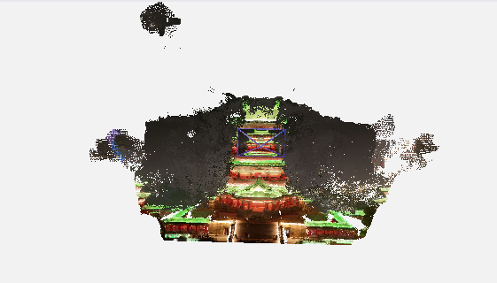
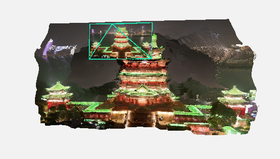
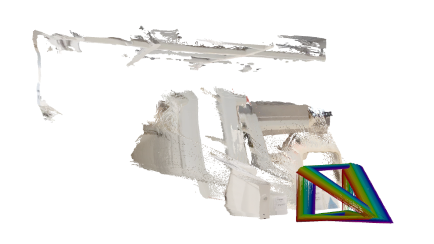
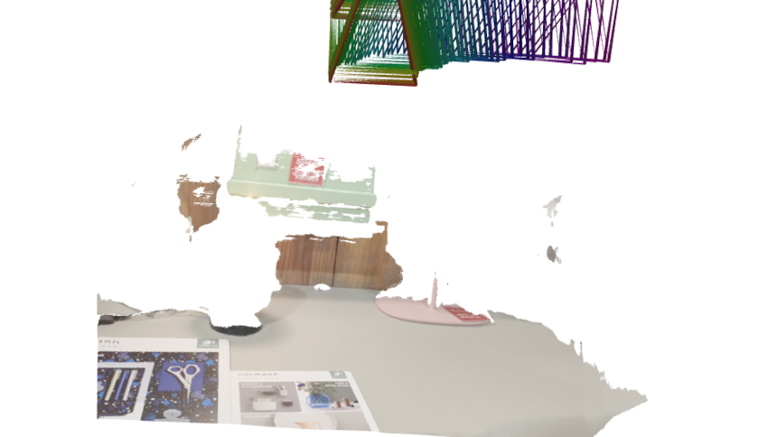
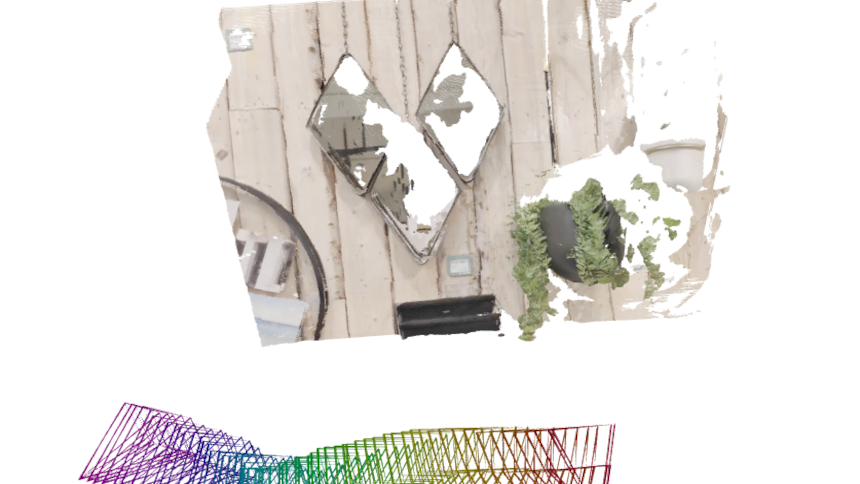
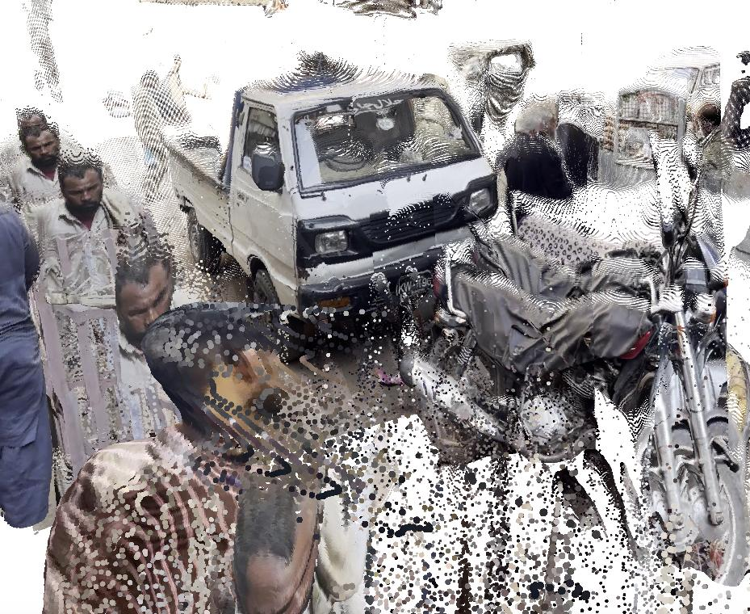
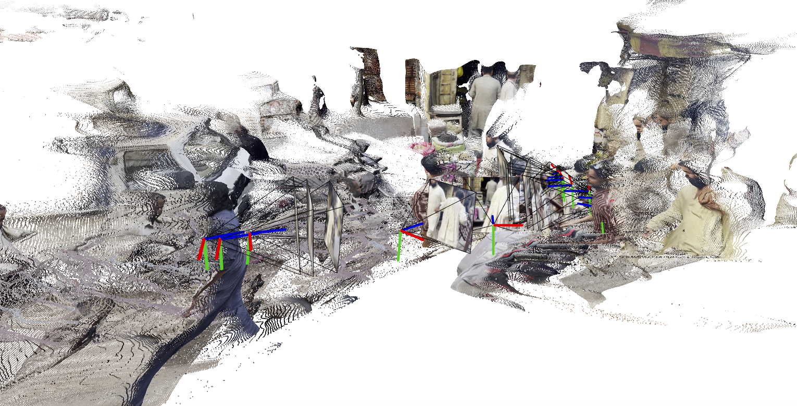
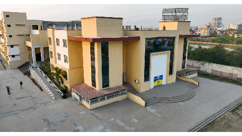
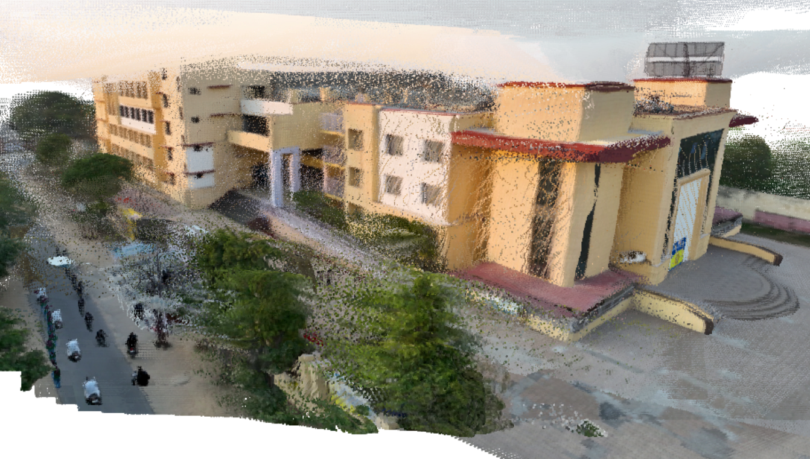

Our assigned paper was "Selfi: Self Improving Reconstruction Engine via 3D Geometric Feature Alignment", a paper that introduces a self-improving framework for improving pretrained 3D reconstruction models such as VGGT. Recent 3DGS methods have made significant progress in one simple feed-forward Gaussian prediction (e.g. AnySplat) beyond optimization-based methods, but they often lack multiview consistency, even though each view has a plausible 3D structure. Selfi aims to address this issue by training an additional adapter head that aligns feature maps across views, leveraging VGGT's depth and camera pose as pseudo ground truth. The aligned feature maps are then used in U-Net, which is also trained to produce Gaussian primitives in one shot, guaranteeing the final output to be multiview consistent.
However, we found that Selfi is not the current frontier of this task, and does not have public code. The Selfi paper is cited by a related work called SelfEvo, which we identified as the current frontier. Similarly to Selfi, SelfEvo improves the pretrained VGGT backbone using a self-improving framework. The authors accomplish this using a student-teacher framework where the student must learn to create accurate reconstructions without access to all of the same video context that the teacher has, making a constant self-improvement pipeline possible even on unlabeled data. Evaluations show the method to consistently outperform standard VGGT across a variety of datasets, including the native evaluation benchmarks of VGGT. The self-distillation framework also makes it possible to train on natural, dynamic scenes where VGGT struggles.
The authors post-train VGGT on the OmniWorld-Game dataset, a synthetic video dataset of video game environments. In subsequent evauluations, they show that the post-trained model SelfEvo-VGGT outperforms VGGT both on this dataset and on the standard evaluation benchmarks of VGGT, demonstrating that their method does not overfit to the new domain and broadly improves the model's capabilities. This is true for both camera pose estimation and depth estimation across diverse benchmarks. For these reasons, we chose to use the official SelfEvo-VGGT model and code for the project, and explore what kinds of data it performs well or poorly on.
For a typical scene, SelfEvo-VGGT creates an excellent reconstruction. For example, here is the reconstruction it creates from a video of the benches on the second floor of Winston Chung Hall:
The authors also demonstrate a variety of qualitative examples of SelfEvo-VGGT outperforming VGGT. For example, in a video that zooms in and out of the following building
the results for VGGT (left) and SelfEvo-VGGT (right) are as follows:


We were able to identify three main failure cases where even SelfEvo-VGGT cannot produce an accurate reconstruction. One case that is challenging is videos with reflections, especially large mirrors. Mirrors present the illusion of there being objects and space where there is none, and often present distortions and specularities that can be confusing for a 3D reconstruction method and make an otherwise static scene appear dynamic. As a result, when inputting frames from a video that gently sways the camera in front of mirrors and specular surfaces, the resulting reconstruction shows a variety of failure modes. Below are some examples: on the left are frames from the video, and on the right are the resulting reconstructions. Notably, the areas with mirrors or specularities are absent from the reconstruction, and some reconstructions turn out to be warped and geometrically broken.




In some cases the method incorrectly reconstructs reflected objects as if they were present in the mirror surface, for example:


This shows that although SelfEvo-VGGT is an innovative improvement upon VGGT, there are still scenes where the model performance can degrade or break down entirely.
Another failure mode is that SelfEvo-VGGT succesfully reconstructs dynamic objects but struggles with geometric consistency. For example, in the following video of a street scene with moving pedestrians, SelfEvo-VGGT is able to reconstruct the dynamic objects pretty well, but some stationary objects or background are warped or inconsistent across views. In the example below, we can clearly see that the motorcycle's wheel from different views dislocates.

The second example below gives us a clue about this failure mode. Even though the camera from the video is just rotating from left to right -- maybe also translating a bit to the right -- and thus the camera estimation should be clustered around a single point, the camera estimation from SelfEvo-VGGT is scattered, especially in the last few frames. This suggests that the camera estimation is not very accurate, which we suspect is due to the fact that SelfEvo freezes the camera estimation module from VGGT and it doesn't calibrate camera positions with dynamic objects.

The last case is videos with fast small motions, such as a flying bird. In the following video, a bird flies from right to left in front of the building, while the camera slowly orbits around the building. Since SelfEvo-VGGT is able to reconstruct motorcyclists at the bottom left, we expected it to be able to reconstruct the trace of a flying bird as well, but it is not captured at all. This likely comes from two possible reasons: first, the bird is very small and fast-moving, so it might be treated as noise and ignored by the backbone model, VGGT; second, the student model is intentionally trained upon an image sequence with some frames dropped (i.e. without some context), and thus it might not be able to learn the the bird's contextual continuity between two frames with a large gap.


In this project, we explored SelfEvo, a self-improving framework for improving 3D reconstruction models. By looking at how it handles different videos, we found both its strengths and weaknesses. SelfEvo-VGGT creates better dynamic reconstructions than VGGT. However, it still struggles with videos with specularities and reflections, videos with fast small motions, and videos where the camera estimation is inaccurate. The reason for these failure modes seems to come from the fundamental capabilities of pretrained VGGT model as well as the design of SelfEvo's student-teacher framework. Overall, SelfEvo is an innovative method that significantly improves VGGT, but there are still many opportunities for improvement and future work in this area.